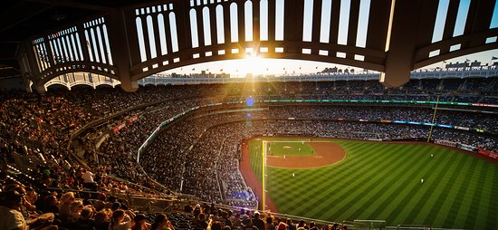

This is a project revolving around the gathering, transforming, and presenting statistics using MLB's Statcast technology, from the 2015 season onward. My overarching goal is to find trends within this data as to how the game is evolving, find underrated players, and uncover patterns and interesting information about the game of baseball
This project makes use of Python, SQL, PowerBI, Pandas, and Bigquery. Data is gathered continuosuly on a Raspberry Pi 4.
<<<<<<< HEAD  ======= >>>>>>> 5cd93c9b2dba7c8dc5ca09d0f5185c203531f930